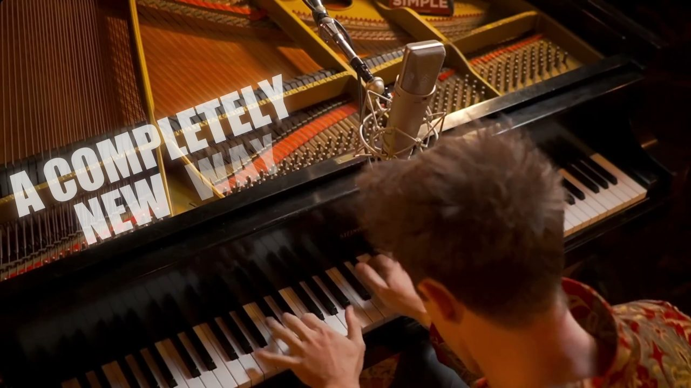

★★★★★ 1,300+ five-star reviews · 40,000+ students
Play the songs you love. Skip the years of scales.
The Ridley Method: four phases from your first real song to a piano that's yours. Here's how it works.

A conversation, not a checkout. You never have to play a note.
Why nothing stuck before
Most adults have tried piano at least once. It wasn't you. It was the method.
Childhood lessons
Built for kids working toward exams: years of scales and method books before any music you'd choose to play. Most adults quit long before the music arrives.
The apps
Falling-note games train you to track a screen, not to play. Close the app and the music closes with it.
YouTube on your own
Great teaching exists there, but with no sequence and no feedback, adults binge tutorials and still can't play a full song.
You don't need years of scales. You need a path that starts with the music.
Four phases. Music from day one.
Stephen Ridley built the method around one reversal: the music comes first, and the theory arrives through it. Each phase builds on the last.

Phase 1 · First Song
You play a real song from the very beginning. Not a warm-up, not an exercise: a piece of music you'd choose to hear. That first win changes what practice feels like.
"I've had eight piano teachers, and I learned more from the Ridley Academy than all the others combined."
Phase 2 · Real Repertoire
One song becomes a set. You build a growing list of pieces you can sit down and play, and the patterns inside them start connecting from song to song.
"Worth it." Carlos reached his goal to play piano in less than six months.
Phase 3 · Musical Fluency
Reading, theory, and technique come together through the music itself. You understand what your hands are doing and why, so new pieces come faster and one slip no longer derails the whole piece.
At 68, Glenwood learned to play with both hands and read music in one year.
Phase 4 · Your Sound
You stop reproducing and start expressing. Your taste, your interpretation, your sound. The piano becomes yours.
"Streamlined, effective and exciting." From a professional musician with a music education degree.
What coaching includes
The method is the map. Coaching is what keeps you moving through it.
- A structured path through the full method, so you always know what to work on next.
- Personal feedback and mentorship on your actual playing.
- A community of adult learners walking the same path.
- Lifetime access to the course material.
Coached programs are matched to your goals on a free Breakthrough Session, so you only hear about the one that fits.
1,300+ five-star reviews. Here's a sample.


Your first 12 months, mapped
We'll be straight with you: becoming a pianist takes months, not minutes. Here's what those months look like when they're pointed in the right direction.
First Song, real momentum
Your first real songs, played hands-on at the piano. Someday gets replaced by a playing habit.
Real Repertoire
A growing set of pieces you can sit down and play. Reading and theory build through the music itself.
Musical Fluency
The mechanics become understanding. You know why the music works, so you can recover, adapt, and learn new pieces faster.
Your Sound
You're not following anything anymore. You're playing music you love, your way, and choosing what comes next.
And month 12 isn't an ending. New genres, harder pieces, your own arrangements: the method doesn't expire.
Three ways to learn piano. Only one makes you a player.
| Apps | Traditional lessons | The Ridley Method | |
|---|---|---|---|
| Time to your first real song | Often never. Simplified arrangements on a screen, not the real thing. | Months to years. Scales and method books come first. | Week one. Real songs are the starting point, not the reward. |
| Reading music | No. Falling notes replace notation. | Yes, but drilled before you can play anything you care about. | Yes, learned through the songs you're already playing. |
| Playing without the screen | No. Close the app, lose the music. | Eventually. | From the start. The piano is the whole interface. |
| Songs you actually love | Whatever's licensed, simplified. | Whatever's in the grade book. | The music you came to the piano for. |
| Personal feedback | An algorithm scoring key presses. | Yes, 30 to 60 minutes a week. | A mentor who knows your playing and your goals. |
| Cost over two years | A subscription that keeps billing whether you progress or not. | Two years of weekly private lessons runs $5,200 to $10,400. | Walked through openly on your free Breakthrough Session. |
What does it cost?
For context: two years of weekly private lessons runs $5,200 to $10,400, and most people who start them quit long before the two years are up.
We'll walk through exactly what's included and what it costs on your Breakthrough Session, openly and with zero pressure. No surprise checkout pages, no "act now" pricing.
Book my free Breakthrough SessionNot ready for a call? Take the 60-second quiz instead.
What happens after you apply
Apply
A short application, about 3 minutes. It helps us make your call actually useful.
Pick your time
The calendar comes right after. We'll confirm by text before the call.
Have the conversation
30 minutes. We map where you are to the songs you want to play. You never have to play a note.
See your path
If we're a match, you'll see exactly what's included and what it costs. If not, we'll tell you that too.
Questions adults ask before starting
Am I too old to learn?
Most of our students are over 50, and our students range from 5 to 96. Adults often progress faster than kids: more patience, more discipline, and a lifetime of songs they already love.
Do I need to read music first?
No. You'll play real songs first and learn reading and theory through the music, where it actually makes sense. That order is the whole method.
Is the call really free? What's the catch?
It's free, and it's a conversation, not a checkout. You never have to play a note. We'll talk about where you are and what a real path forward looks like for you specifically. If we think we can help, we'll show you exactly what that looks like and what it costs. If not, we'll tell you that too.
What does coaching cost?
Coached programs are matched to your goals on a free Breakthrough Session, where we walk through exactly what's included and what it costs. For context, two years of weekly private lessons runs $5,200 to $10,400.
Do I need a piano at home?
A piano or a keyboard works. If you're not sure whether yours is suitable, ask us on your Breakthrough Session and we'll tell you straight.

You've seen how it works. Now hear how it fits you.
Apply in 3 minutes. Book your free Breakthrough Session. We'll map your path from first song to your sound.
Book my free Breakthrough SessionA conversation, not a checkout. You never have to play a note.
Not ready for a call? Take the 60-second quiz instead.